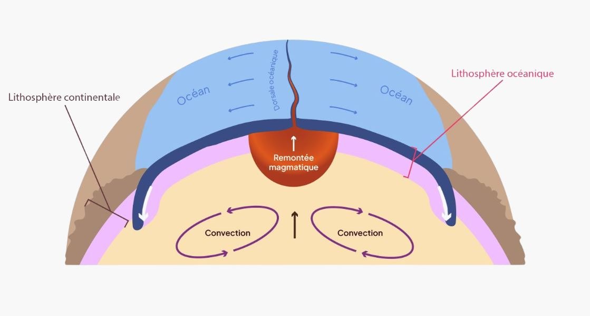
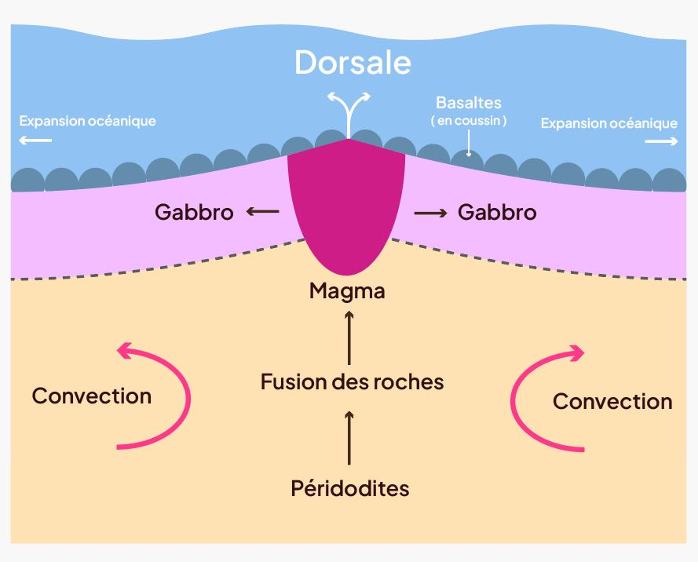
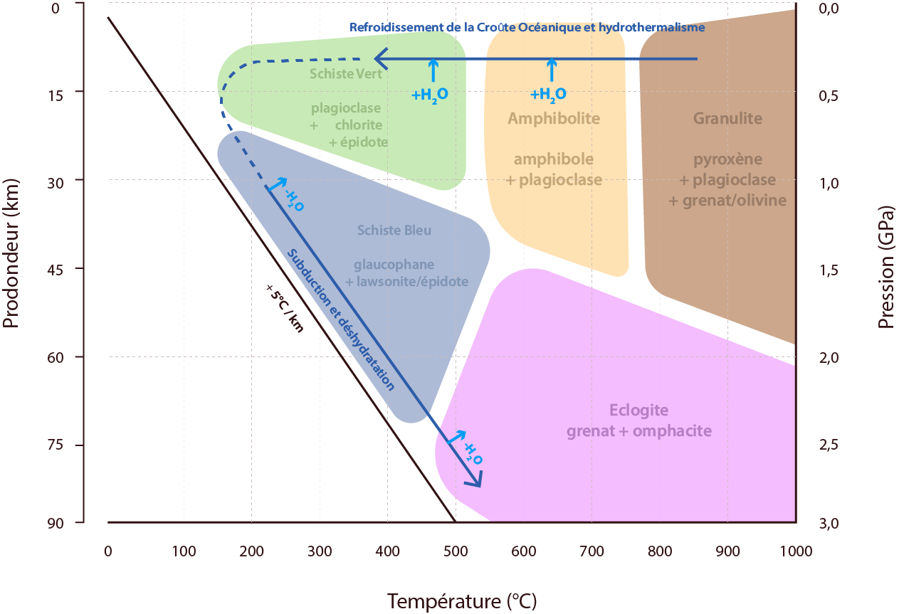

• Le cycle des roches
Formation de la croûte océanique
Dans certaines zones, les mouvements de convection du manteau écartent deux plaques adjacentes (zone de divergence), provoquant la remontée des roches chaudes du manteau vers la surface.
Pendant cette ascension, les échanges de chaleur avec l’environnement sont minimes, mais la pression diminue fortement. Cette baisse de pression abaisse également le seuil de température nécessaire à la fusion des roches et engendre une fusion partielle de celles-ci.
Zone de divergence


Accrétion de la croûte océanique
Le magma ainsi formé remonte, s’échappe sous forme de lave, en formant des coussins (ou pillows lavas).
La lave perce à nouveau le coussin de l’intérieur, s’étale et se solidifie à nouveau pour former la croûte océanique, qui s’accumule au fond des océans.

Le magma est coincé dans une enveloppe vitrifiée

Sous la pression, la coulée de lave perce l’enveloppe

Au contact de l’océan, la lave se vitrifie en surface

Le processus se répète en continu
Hydro-thermalisme
Fumeurs noirs
Les fumeurs noirs permettent d’évacuer une partie de la chaleur interne de la Terre depuis le manteau terrestre vers l’océan.
Ils s’apparentent à des cheminées hydrothermales émettant des fluides à très haute température, souvent supérieures à 300 °C.
Ces fluides, riches en sulfures métalliques tels que le fer et le manganèse, précipitent (cristallisent) au contact de l’eau froide de l’océan, formant ainsi des panaches noirs.
Ils se développent principalement le long des dorsales océaniques.
Dans ces zones, l’eau de mer s’infiltre dans la croûte océanique, se réchauffe au contact du magma, puis remonte en dissolvant au passage divers minéraux contenus dans les roches.
C’est la circulation de cette eau à l’intérieur de la croûte océanique qui provoque les transformations et donc le métamorphisme des roches du plancher océanique.

Fumeurs blancs
Les fumeurs blancs, en revanche, émettent des fluides à des températures plus modérées, généralement comprises entre 150 et 250 °C.
Ces fluides sont riches en composés tels que le baryum, le calcium et le silicium, qui précipitent pour former des panaches de couleur claire.
La formation des fumeurs blancs est souvent associée à l’altération de roches comme les péridotites (roches du manteau riche en fer et magnésium).

Qu’est-ce que le métamorphisme ?
Le métamorphisme est un procédé qui dépend des conditions de pression et de température de l’environnement. Il correspond à la transformation des roches et des minéraux qu’elles contiennent à l’état solide. Ces transformations se traduisent par un changement de “faciès” de la roche.
Un faciès (aspect) est défini comme une gamme de conditions pression- température de stabilité d’un assemblage spécifique de minéraux.
Il existe ainsi plusieurs types de faciès qui s’apparentent à des familles de roches tel que : Schiste vert, Schiste bleu, amphibolite,…
Ils nous permettent de comprendre entre autres les familles de minéraux présents qui composent la roche étudiée.
Par exemple, le faciès schiste vert est défini essentiellement par la présence de trois familles de minéraux : feldspaths plagioclases (famille de minéraux silicatés), chlorite et épidote. C’est l’apparition de la chlorite qui donnera un aspect verdâtre à la roche.

Métamorphisme en zone de subduction
Quand deux plaques tectoniques se rencontrent : la plus dense s’enfonce sous une autre moins dense : c’est généralement la subduction d’une plaque océanique sous une plaque continentale. En s’enfonçant dans le manteau, la plaque océanique subit des conditions de plus en plus extrêmes, avec une augmentation de la pression et de la température, ce qui provoque des transformations des minéraux, sans fusion : c’est le métamorphisme en zone de subduction.
Dans les premières dizaines de kilomètres, on observe le faciès des Schistes Verts, caractérisé par la présence de plagioclase, chlorite et épidote. Ces minéraux se forment à basse température et pression, dans une croûte encore peu transformée.
Vers 20 à 50 km de profondeur, quand la pression augmente mais la température reste modérée (vers 400-500°C), les minéraux se transforment : la chlorite disparaît et laisse place à la glaucophane, une amphibole bleue, parfois associée à la lawsonite ou à l’épidote. C’est le faciès Schiste Bleu, typique des zones de subduction froides et hydratées. Ces transformations sont dues à la libération progressive de l’eau contenue dans les minéraux hydratés. Cette eau s’échappe sous l’effet de la pression et de la température, ce qui entraîne la formation de minéraux plus denses et moins hydratés.
Plus profondément, à partir de 60 km environ (et au-delà de 2 GPa de pression), les minéraux deviennent plus compacts et moins hydratés. Le grenat et l’omphacite (un pyroxène vert) remplacent les minéraux précédents. On parle alors du faciès Éclogite, caractéristique des hautes pressions. À mesure que la plaque s’enfonce, elle se déshydrate, ce qui rend les roches plus cassantes et favorise la survenue de séismes violents. Cette eau peut aussi provoquer la fusion partielle du manteau supérieur, jouant un rôle clé dans la formation des volcans. Parfois, des fragments de la plaque plongeante remontent à la surface le long du plan de subduction. Ces roches gardent les minéraux formés en profondeur, comme des marqueurs de leur histoire. On les retrouve aujourd’hui dans les chaînes de montagnes.